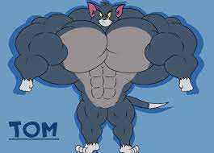
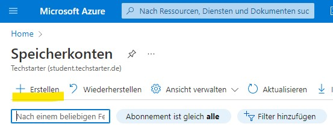
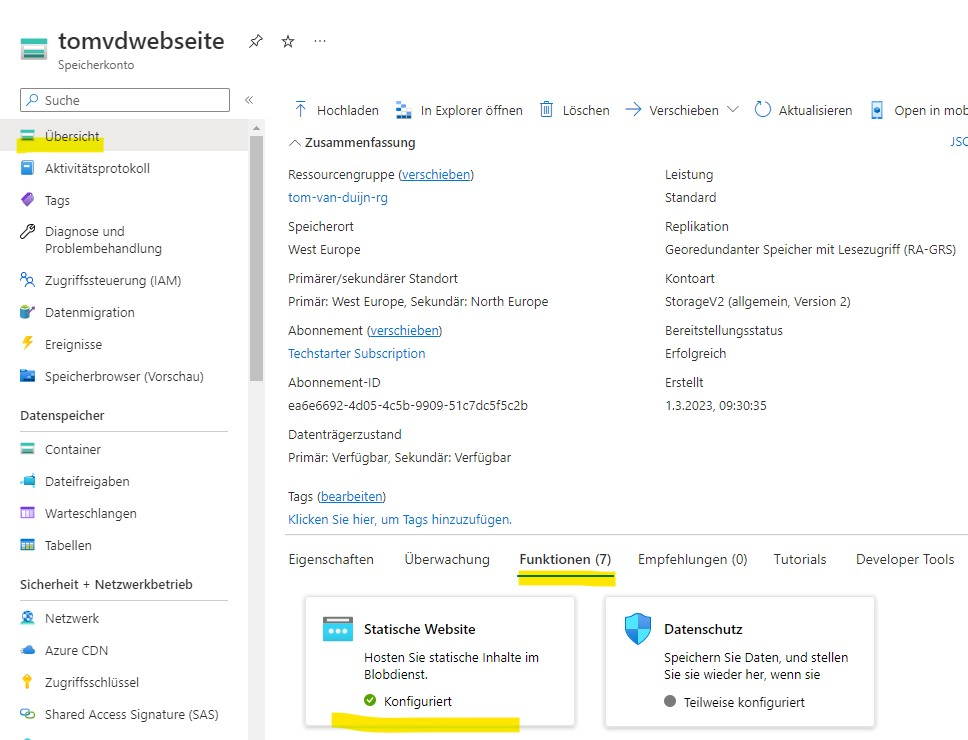
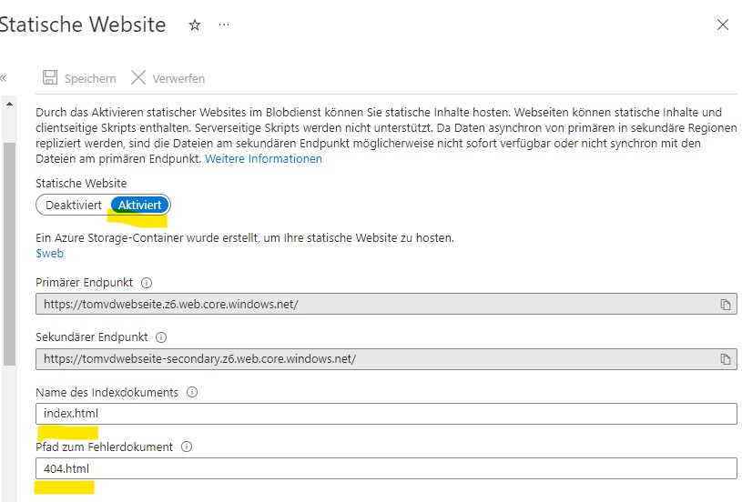
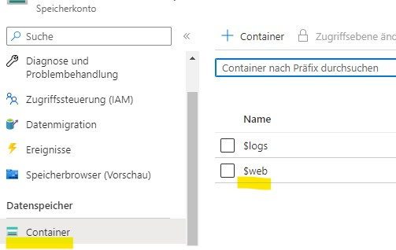
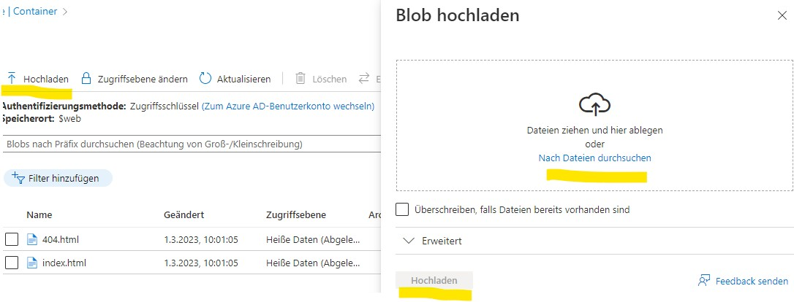
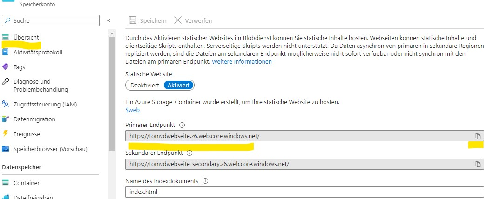
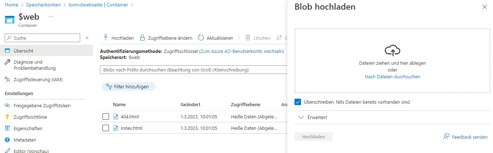

Gruppenarbeit zum Erstellen einer Statischen HTML-Seite und bereit stellen in Azure
Adriano
Tom

Michael
Hier zeigen wir euch, wie wir diese Webseite erstellt haben!
Ein Speicherkonto erstellen auf Microsoft Azure

Statische Webseite anklicken unter Funktionen

Statische Webseite aktivieren mit Indexseite und Fehlerseite

Unter Container die Webcontainer anklicken

Dateien hochladen

Webseite aufrufen

Wenn Änderungen im HTML vorgenommen wurden, müssen die Dateien erneut hochgeladen werden. Man muss den Haken setzen, um die Dateien zu überschreiben.

Auch Bilder, Videos etc. müssen mit hochgeladen werden, wenn man diese im Code eingebunden hat. Ansonsten werden die Sachen auf der Webseite nicht mit angezeigt. Im Großen und Ganzen muss jede kleinste Änderung hochgeladen werden, auch wenn es nur eine Leerzeile ist!!!